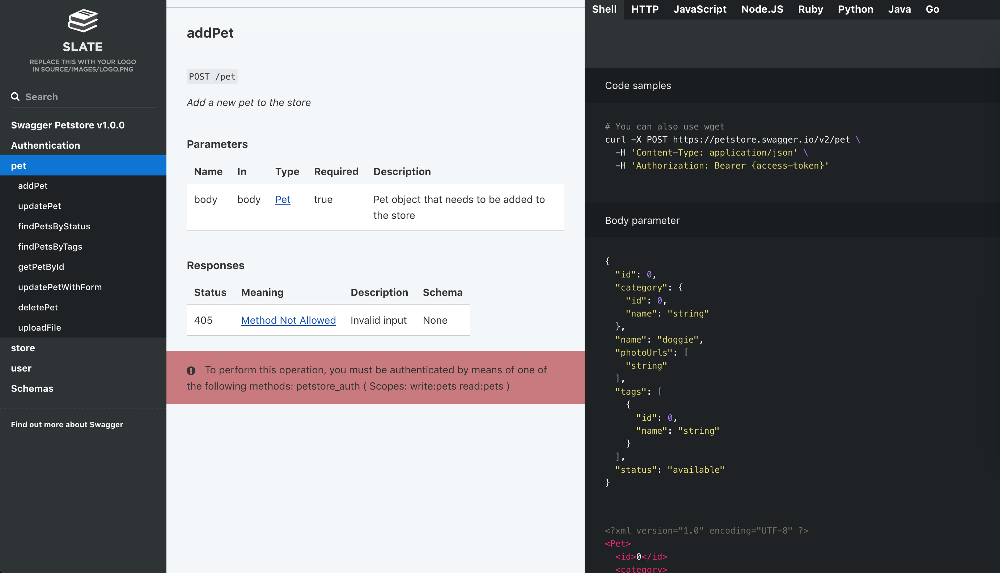
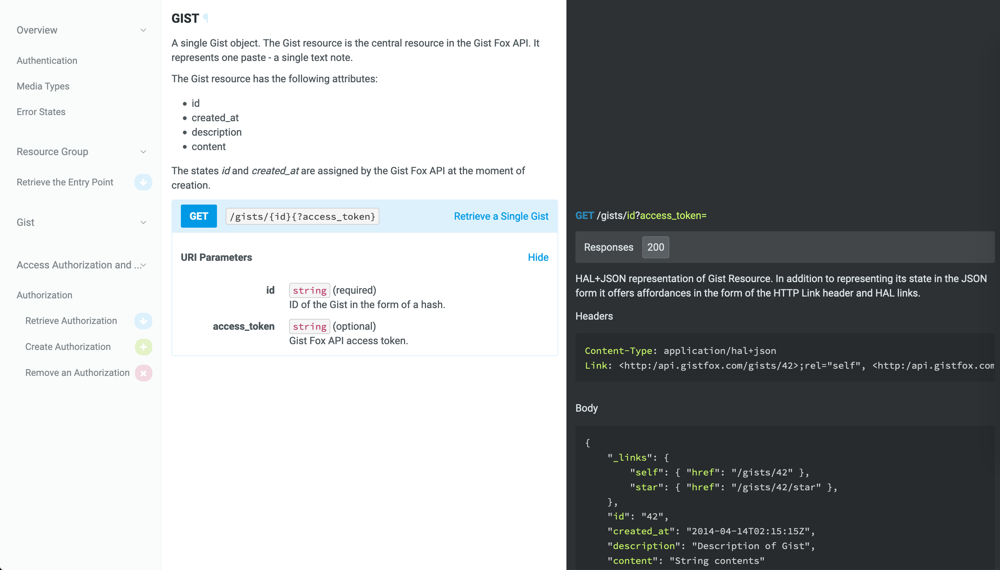

Documenting API with Foliant¶
In this tutorial we will learn how to use Foliant to generate documentation from API specification formats OpenAPI (Swagger), RAML and API Blueprint.
The general idea is that you supply a specification file path (json or yaml for OpenAPI, raml for RAML) to a preprocessor which will generate a Markdown document out of it. Markdown is what Foliant is good at, so after that you can do anything with it: convert to PDF, partially include in other documents, etc. In this guide we will concentrate on building a static website for your API documentation.
Please note that in this article we cover only the basic usage of the tools. For detailed information on features and customizing output refer to each component’s doc page.
OpenAPI¶
Installing prerequisites¶
Besides Foliant you will need to install some additional packages on your system. If you are using our full docker image foliant/foliant:full, you can skip this chapter.
First, install the SwaggerDoc preprocessor which will convert spec file to Markdown.
pip3 install foliantcontrib.swaggerdoc
SwaggerDoc preprocessor uses Widdershins under the hood, so you will need to install that too.
npm install -g widdershins
Finally, to build the static website we will be using Slate backend:
pip3 install foliantcontrib.slate
Also note that Slate requires Ruby and Bundler to work (that’s a lot of dependencies, I know).
Creating project¶
Let’s create Foliant project. The easiest way is to use foliant init command. After running the command Foliant will ask you about your project name. We’ve chosen "OpenAPI docs", but it may be anything:
cd ~/projects
foliant init
Enter the project name: OpenAPI docs
Generating project... Done
────────────────────
Project "OpenAPI docs" created in openapi-docs
In the output Foliant informs us that the project was created in a new folder openapi-docs. Let’s copy your OpenAPI spec file into this folder:
cp ~/Downloads/my_api.yaml ~/projects/openapi-docs
In the end you should get the following directory structure:
└── openapi-docs
├── Dockerfile
├── README.md
├── docker-compose.yml
├── foliant.yml
├── my_api.yaml
├── requirements.txt
└── src
└── index.md
If you wish to use Docker with full Foliant image, which is the recommended way to build Foliant projects, then open generated Dockerfile and replace its contents with the following line:
FROM foliant/foliant:full
Configuring project¶
Now let’s set up foliant.yml. Right now it looks like this:
title: OpenAPI docs
chapters:
- index.md
First add and fill up the preprocessors section at the bottom:
preprocessors:
- swaggerdoc:
spec_path: !path my_api.yaml # path to your API spec file, relative to project root
At this stage you may also specify path to custom templates dir in environment: {user_tempaltes: path/to/custom/templates} parameter. Templates describe the exact way of how to convert structured specification file into a Markdown document. For this tutorial we will be using default templates because they are perfect for our static site. Check Widdershins docs for detailed info on templates.
The last thing we need to do is point Foliant where to insert the generated Markdown from the spec file. We already have a source file created for us by init command, called index.md, so let’s use it to store our API docs.
Open openapi-docs/src/index.md with text editor and replace its contents with the following:
<swaggerdoc></swaggerdoc>
Foliant will insert generated markdown on the place of this tag during build. You may even add some kind of introduction for the API docs before the tag, if you don’t have such inside your spec file.
That’s it! All is left to do is run make command to build your site.
foliant make site --with slate
Parsing config... Done
Applying preprocessor swaggerdoc... Done
Applying preprocessor slate... Done
Applying preprocessor _unescape... Done
Making site...
...
Done
────────────────────
Result: OpenAPI_docs-2019-11-29.slate/
If you use docker, the command is:
docker-compose run --rm foliant make site --with slate
Now if you open the index.html from just created OpenAPI_docs-2019-11-29.slate folder, you should see something like this:

You can customize the page styles, add or remove language example tabs and tune other options. Check the Slate backend documentation for details.
RAML¶
Building API docs from RAML specification is quite similar to that of OpenAPI, the difference is that instead of swaggerdoc preprocessor you use ramldoc. We will go through all the steps anyway.
Installing prerequisites¶
Besides Foliant you will need to install some additional packages on your system. If you are using our full docker image foliant/foliant:full, you can skip this chapter.
First, install the RAMLDoc preprocessor which will convert spec file to Markdown.
pip3 install foliantcontrib.ramldoc
RAMLdoc preprocessor uses raml2html with full-markdown-theme under the hood, so you will need to install those too.
npm install -g raml2html raml2html-full-markdown-theme
Finally, to build the static website we will be using Slate backend. If you don’t have it, run:
pip3 install foliantcontrib.slate
Also note that Slate requires Ruby and Bundler to work.
Creating project¶
Let’s create Foliant project. The easiest way is to use foliant init command. After running the command Foliant will ask you about your project name. We’ve chosen "API docs", but it may be anything:
cd ~/projects
foliant init
Enter the project name: API docs
Generating project... Done
────────────────────
Project "API docs" created in api-docs
In the output Foliant informs us that the project was created in a new folder api-docs. Now let’s copy your RAML spec file to this folder:
cp ~/Downloads/my_api.raml ~/projects/api-docs
In the end you should get the following directory structure:
└── api-docs
├── Dockerfile
├── README.md
├── docker-compose.yml
├── foliant.yml
├── my_api.raml
├── requirements.txt
└── src
└── index.md
If you wish to use Docker with full Foliant image, which is the recommended way to build Foliant projects, then open generated Dockerfile and replace its contents with the following line:
FROM foliant/foliant:full
Configuring project¶
Now let’s set up foliant.yml. Right now it looks like this:
title: API docs
chapters:
- index.md
First add and fill up the preprocessors section at the bottom:
preprocessors:
- ramldoc:
spec_path: !path my_api.yaml # path to your API spec file, relative to project root
At this stage you may also specify path to custom templates dir in the template_dir parameter. Templates describe the exact way of how to convert structured specification file into a Markdown document. raml2html uses Nunjucks templates, which are stored in the theme. So the easiest way to create your own templates is to copy default ones and adjust them to your needs. But we will use the default template which works great with Slate.
The last thing we need to do is point Foliant where to insert the generated Markdown from the spec file. We already have a source file created for us by init command, called index.md, so let’s use it to store our API docs.
Open api-docs/src/index.md with text editor and replace its contents with the following:
<ramldoc></ramldoc>
Foliant will insert generated markdown on the place of this tag during build. You may even add some kind of introduction for the API docs before the tag, if you don’t have such in your spec file.
That’s it! All is left to do is run make command to build your site.
foliant make site --with slate
Parsing config... Done
Applying preprocessor ramldoc... Done
Applying preprocessor slate... Done
Applying preprocessor _unescape... Done
Making site...
...
Project built successfully.
Done
────────────────────
Result: API_docs-2019-11-29.slate/
If you use docker, the command is:
docker-compose run --rm foliant make site --with slate
Now if you open the index.html from just created API_docs-2019-11-29.slate folder, you should see something like this:

You can customize the page styles, add or remove language example tabs and tune other options. Check the Slate backend documentation for details.
Blueprint¶
API Blueprint is a Markdown-based API specification format. That’s why the build process differs from that of OpenAPI or RAML: we skip the converting step and just add the specification file as a source.
Installing prerequisites¶
To build a static site we will use Aglio backend which is designed specifically for rendering API Blueprint. So first install the backend and Aglio renderer itself:
pip3 install foliantcontrib.aglio
npm install -g aglio
Creating project¶
Let’s create a Foliant project. The easiest way is to use foliant init command. After running the command Foliant will ask you about your project name. We’ve chosen "API docs", but it may be anything:
cd ~/projects
foliant init
Enter the project name: API docs
Generating project... Done
────────────────────
Project "API docs" created in api-docs
In the output Foliant informs us that the project was created in a new folder api-docs. Now copy your Blueprint spec file into the src subfolder (it’s better to change the extension to .md too), replacing "index.md":
cp ~/Downloads/spec.abip ~/projects/api-docs/src/index.md
In the end you should get the following directory structure:
└── openapi-docs
├── Dockerfile
├── README.md
├── docker-compose.yml
├── foliant.yml
├── requirements.txt
└── src
└── index.md
If you wish to use Docker with full Foliant image, which is the recommended way to build Foliant projects, then open generated Dockerfile and replace its contents with the following line:
FROM foliant/foliant:full
Configuring project¶
Now check your foliant.yml. Right now it looks like this:
title: API docs
chapters:
- index.md # this should be your API Blueprint specification
It may be hard to believe, but no other configuration is required! Let’s build our project:
foliant make site --with aglio
Parsing config... Done
Applying preprocessor flatten... Done
Applying preprocessor _unescape... Done
Making site... Done
────────────────────
Result: OpenAPI_docs-2019-11-29.aglio
If you use docker, the command is:
docker-compose run --rm foliant make site --with aglio
Now if you open the index.html from just created API_docs-2019-11-29.aglio folder, you should see something like this:

It’s not near as attractive as the Slate site we had in previous examples. But don’t worry, Aglio supports styling with CSS and layout control with Jade templates. It also has several built-in themes, which look much better than the default one.
Open your foliant.yml again and add following lines at the end:
backend_config:
aglio:
params:
theme-variables: streak
theme-template: triple
Now run the same build command:
foliant make site --with aglio
And look at the result:

Much better!